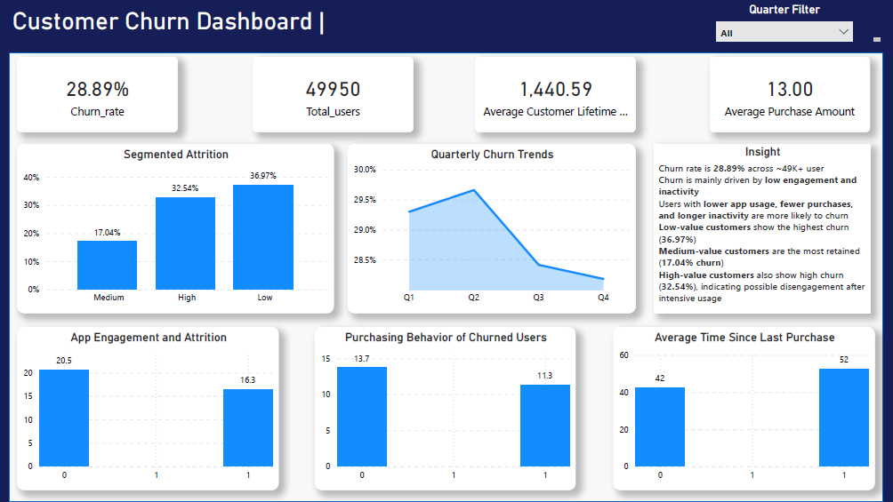

A comprehensive Power BI dashboard analysing customer churn across 49,950 users — uncovering churn drivers, segment-level attrition, app engagement patterns, and quarterly retention trends.
Project Overview
Customer Churn Analysis is a single-page business intelligence dashboard built in Power BI, backed by a Python data cleaning pipeline, to analyse churn behaviour across a base of 49,950 customers.
The goal was to go beyond raw churn numbers — telling a data story that helps business stakeholders make decisions around retention strategy, customer segmentation, re-engagement campaigns, and lifetime value optimisation.
Every visual on the dashboard answers a specific business question, with actionable insights surfaced directly in the insight panel.
Business Objectives
Challenges
Problem 01
The raw dataset had null values scattered across engagement scores, purchase history columns, and customer segment labels — causing skewed churn calculations and unreliable visual outputs in Power BI.
Fix: Built a Python (Pandas) cleaning pipeline — median imputation for numeric nulls, mode imputation for categoricals, deduplication, and dtype enforcement — before importing into Power BI.
Problem 02
The dataset had no binary churn column. Without a clear churn flag, none of the Power BI visuals could be built — every metric depended on first defining what "churned" actually means for this business context.
Fix: Engineered an is_churned binary column in Python — customers with 60+ days since last purchase and zero recent activity were flagged as churned, then imported as a clean feature into the Power BI model.
Problem 03
Low-value customers dominated the dataset by volume, making their raw churn count appear similar to other segments. Simple counts were misleading — the real story was in churn rate per segment, not absolute numbers.
Fix: Wrote independent CALCULATE-based DAX measures for each value segment, computing churn rate as churned ÷ total per segment — ensuring the Segmented Attrition bar chart reflects fair, normalised comparison (17% med · 32.5% high · 37% low).
Key Insights
Low-value customers churn at 36.97% — the highest across all segments — indicating price sensitivity and a weak emotional connection to the product.
High-value customers churn at 32.54%, suggesting post-intensive-usage disengagement. These users need proactive retention offers before they go silent.
Users with low app engagement score average 20.5 churn events vs 16.3 for high-engagement users. App stickiness is a leading churn indicator — not a lagging one.
Quarterly trends show churn peaked in Q2 (~29.8%) before declining steadily through Q4. Seasonal churn is predictable and can be countered with Q1–Q2 retention campaigns.
Churned users average 11.3 purchases vs 13.7 for retained users. Purchase frequency drops before churn occurs — this is an early-warning signal that can trigger intervention.
Churned customers average 52 days since last purchase vs 42 for active users. A 45-day re-engagement trigger (push/email) could intercept churn before it becomes permanent.
Full Report
Dashboard

Tools & Skills Used
What I Learned
Cleaning data in Pandas before importing into Power BI dramatically reduces DAX complexity and prevents misleading visuals from dirty source data — getting the foundation right matters most.
There's no universal churn formula. I had to align on a business rule (60-day inactivity) before any analysis could begin. Domain thinking must come before technical execution.
A 32% churn rate looks alarming — until you realise it's your high-value segment who engaged heavily before disengaging. The "so what" only emerges when metrics are broken down by segment.
Purchase frequency drop and app disengagement are leading indicators of churn. Building visuals around these leading signals enables proactive action, not just post-mortem reporting.
I'm open to full-time roles and internships in Data & Business Analytics.